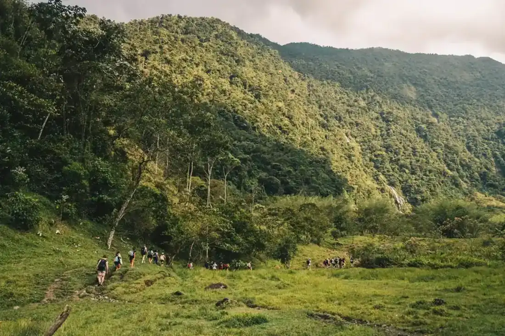
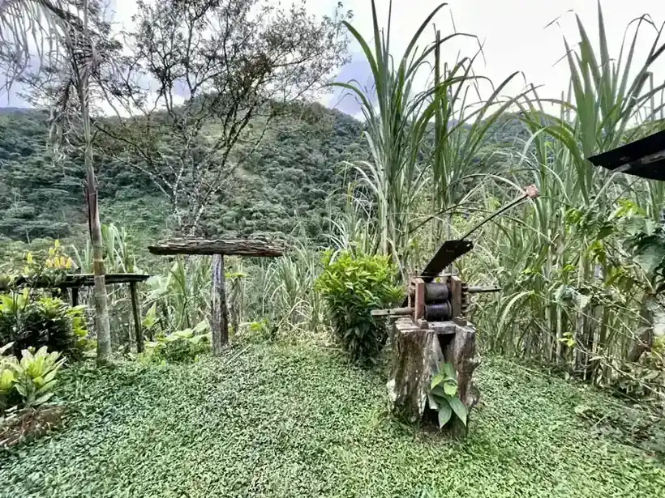
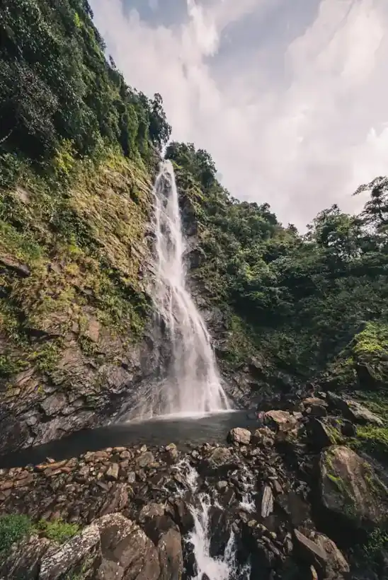

Valle de las Cascadas
Aventura 3/5La PiñuelaLa PiñuelaEl recorrido completo, con más calma. Caminas con guía entre cascadas y pozas, y duermes en una finca campesina auténtica.
- Guía local durante todo el recorrido
- Entradas
- 4 comidas
Expediciones privadas · Cocorná, Antioquia
Caminatas con guía local y noches en fincas campesinas. Tú caminas; nosotros nos encargamos del resto.
MedellínCocorná

Las más elegidas
El recorrido completo, con más calma. Caminas con guía entre cascadas y pozas, y duermes en una finca campesina auténtica.

Tres días por el cañón del río Melcocho: pozas naturales cristalinas, caminos campesinos y dos noches en la misma finca auténtica.

Aprende a hacer panela en un trapiche tradicional, camina hasta las cascadas, báñate y almuerza junto a una poza natural.
Tours privados. Precio por persona para un grupo de 4; para otros tamaños, escríbenos por WhatsApp.
Sobre nosotros
Trabajamos con guías y familias campesinas de Cocorná. Rutas fuera de los caminos marcados, en grupos privados.
Reseñas en Google · ★★★★★
★★★★★
Nuestra familia de tres, con un niño de ocho años, tuvo una experiencia fantástica en el Valle de las Cascadas. Nuestro guía y su mula fueron invaluables: apoyaron a la familia y nos llevaron a pozas preciosas y fincas que nunca habríamos encontrado solos. Las personas donde dormimos fueron anfitriones geniales.
★★★★★
Nos organizaron todo, incluida una caminata de dos días por el Valle de las Cascadas y una salida de rafting.
Fragmentos traducidos del original.
Cómo funciona
Escoge una expedición y una fecha. Todas salen a las 8:00 a.m.
Por WhatsApp confirmamos disponibilidad y precio para tu grupo.
Con un depósito del 50%. Cancelación gratis hasta 3 días antes.
Grupos abiertos
Nuestras expediciones son privadas, pero si viajas solo o en pareja te unimos con otros viajeros que van en las mismas fechas. Así se reparte el costo del guía y del transporte, y el precio por persona baja. No hay mínimo de personas: tú eliges si prefieres ir en privado o en grupo.
Ojo: un grupo abierto solo es seguro cuando todos los viajeros han confirmado. Te avisamos por WhatsApp en cuanto esté listo.

Preguntas frecuentes
Cada página de expedición indica exactamente qué está incluido. Por regla general, el precio incluye guía, entradas y las comidas indicadas en el programa. Incluimos las comidas donde organizarlas por tu cuenta sería difícil —senderos remotos, fincas o zonas con pocas opciones para comer— y las dejamos fuera donde es fácil organizarlas tú mismo, como en pueblos con muchos restaurantes.
Para cada expedición ofrecemos un punto de encuentro y de regreso central, y diseñamos las rutas para que también sean fáciles de alcanzar en transporte público. Si prefieres evitar la logística, siempre podemos cotizar transporte privado adicional, incluido un traslado privado desde Medellín, para hacer el viaje más cómodo.
Puedes cancelar hasta 3 días antes del inicio de tu expedición y recibirás un reembolso completo. Si cancelamos nosotros, también te devolvemos todo lo que hayas pagado.
Para asegurar tu lugar, pedimos un depósito del 50%. Esto confirma tu expedición y nos permite organizar con antelación los guías, el alojamiento, el transporte y la comida. Escríbenos por WhatsApp al +57 350 418 6252. Recomendamos reservar con tiempo, ya que la disponibilidad de los guías es limitada.
Escríbenos y armamos tu expedición.